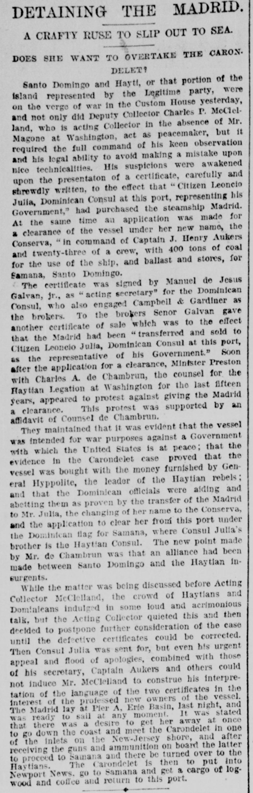
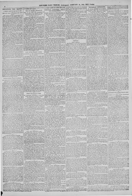

They maintained that it was evident that the vessel was intendedSostenían que era evidente que el buque estaba destinado
New-York Tribune. New York [N.Y.], February 16, 1889. Page 2. Published by New York Tribune. A daily newspaper, 1866–1924.New-York Tribune. New York [N.Y.], 16 de febrero de 1889. Página 2. Publicado por New York Tribune. Periódico diario, 1866–1924. View the originalVer el original


See the full pageVer la página completaThe New-York tribune reported that authorities investigated a vessel, formerly named the Madrid and renamed the Conserva, suspected of being fitted for war against a government at peace with the United States by Haitian rebels and Dominican officials. Mr. de Chambrun argued that an alliance existed between Santo Domingo and the Haitian insurgents, while Acting Collector McClelland postponed the case due to defective certificates despite appeals from Consul Julia and others.El New-York tribune dio cuenta de las averiguaciones practicadas por las autoridades sobre un buque, denominado primitivamente Madrid y rebautizado Conserva, sospechoso de ser artillado para hacer la guerra contra un gobierno amigo de los Estados Unidos por cuenta de rebeldes haitianos y funcionarios dominicanos. El Sr. de Chambrun alegó la connivencia entre el gobierno de Santo Domingo y los sediciosos haitianos, en tanto el administrador interino de aduana McClelland dilató la resolución a causa de certificaciones anómalas, pese a las instancias del cónsul Julia y otros personeros.
FULL TEXT:TEXTO COMPLETO:
New-York Tribune February 16, 188916 de febrero de 1889
DETAINING THE MADRID.DETENIENDO EL MADRID.
A CRAFTY RUSE TO SLIP OUT TO SEA.UNA ASTUTA ARTIMAÑA PARA ESCAPAR AL MAR.
DOES SHE WANT TO OVERTAKE THE CARONDELET?¿QUIERE ALCANZAR AL CARONDELET?
Santo Domingo and Hayti, or that portion of the island represented by the Legitime party, were on the verge of war in the Custom House yesterday, and not only did Deputy Collector Charles P. McClelland, who is acting Collector in the absence of Mr. Magone at Washington, act as peacemaker, but it required the full command of his keen observation and his legal ability to avoid making a mistake upon nice technicalities. His suspicions were awakened upon the presentation of a certificate, carefully and shrewdly written, to the effect that "Citizen Leoncio Julia, Dominican Consul at this port, representing his Government," had purchased the steamship Madrid. At the same time an application was made for a clearance of the vessel under her new name, the Conserva, "in command of Captain J. Henry Aukers and twenty-three of a crew, with 400 tons of coal for the use of the ship, and ballast and stores, for Samana, Santo Domingo.Santo Domingo y Haití, o esa porción de la isla representada por el partido de Legitime, estuvieron al borde de la guerra en la Aduana ayer, y no solo actuó como pacificador el Recaudador Auxiliar Charles P. McClelland, quien es Recaudador en funciones en ausencia del Sr. Magone en Washington, sino que requirió todo el dominio de su aguda observación y su habilidad legal para evitar cometer un error sobre tecnicidades delicadas. Sus sospechas fueron despertadas a la presentación de un certificado, cuidadosa y astutamente escrito, al efecto de que «el Ciudadano Leoncio Julia, Cónsul dominicano en este puerto, representando a su Gobierno», había comprado el vapor Madrid. Al mismo tiempo se hizo una solicitud para un despacho del buque bajo su nuevo nombre, el Conserva, «al mando del Capitán J. Henry Aukers y veintitrés de tripulación, con 400 toneladas de carbón para el uso del buque, y lastre y provisiones, para Samaná, Santo Domingo.
The certificate was signed by Manuel de Jesus Galvan, jr., as "acting secretary" for the Dominican Consul, who also engaged Campbell & Gardiner as the brokers. To the brokers Senor Galvan gave another certificate of sale which was to the effect that the Madrid had been "transferred and sold to Citizen Leoncio Julia, Dominican Consul at this port, as the representative of his Government." Soon after the application for a clearance, Minister Preston with Charles A. de Chambrun, the counsel for the Haytian Legation at Washington for the last fifteen years, appeared to protest against giving the Madrid a clearance. This protest was supported by an affidavit of Counsel de Chambrun.El certificado fue firmado por Manuel de Jesus Galvan, hijo, como «secretario en funciones» para el Cónsul dominicano, quien también empleó a Campbell & Gardiner como los corredores. A los corredores el Señor Galvan dio otro certificado de venta que era al efecto de que el Madrid había sido «transferido y vendido al Ciudadano Leoncio Julia, Cónsul dominicano en este puerto, como el representante de su Gobierno». Poco después de la solicitud de un despacho, el Ministro Preston con Charles A. de Chambrun, el abogado de la Legación haitiana en Washington por los últimos quince años, apareció para protestar contra dar al Madrid un despacho. Esta protesta fue apoyada por una declaración jurada del Abogado de Chambrun.
They maintained that it was evident that the vessel was intended for war purposes against a Government with which the United States is at peace; that the evidence in the Carondelet case proved that the vessel was bought with the money furnished by General Hyppolite, the leader of the Haytian rebels; and that the Dominican officials were aiding and abetting them as proven by the transfer of the Madrid to Mr. Julia, the changing of her name to the Conserva, and the application to clear her from this port under the Dominican flag for Samana, where Consul Julia's brother is the Haytian Consul. The new point made by Mr. de Chambrun was that an alliance had been made between Santo Domingo and the Haytian insurgents.Mantenían que era evidente que el buque estaba destinado a fines de guerra contra un Gobierno con el que los Estados Unidos están en paz; que la evidencia en el caso Carondelet probó que el buque fue comprado con el dinero suministrado por el general Hyppolite, el líder de los rebeldes haitianos; y que los oficiales dominicanos los estaban ayudando e instigando como lo prueba la transferencia del Madrid al Sr. Julia, el cambio de su nombre al Conserva, y la solicitud de despacharlo de este puerto bajo la bandera dominicana para Samaná, donde el hermano del Cónsul Julia es el Cónsul haitiano. El nuevo punto hecho por el Sr. de Chambrun fue que una alianza había sido hecha entre Santo Domingo y los insurgentes haitianos.
While the matter was being discussed before Acting Collector McClelland, the crowd of Haytians and Dominicans indulged in some loud and acrimonious talk, but the Acting Collector quieted this and then decided to postpone further consideration of the case until the defective certificates could be corrected. Then Consul Julia was sent for, but even his urgent appeal and flood of apologies, combined with those of his secretary, Captain Aukers and others could not induce Mr. McClelland to construe his interpretation of the language of the two certificates in the interest of the professed new owners of the vessel. The Madrid lay at Pier A, Erie Basin, last night, and was ready to sail at any moment. It was stated that there was a desire to get her away at once to go down the coast and meet the Carondelet in one of the inlets on the New-Jersey shore, and after receiving the guns and ammunition on board the latter to proceed to Samana and there be turned over to the Haytians. The Carondelet is then to put into Newport News, go to Samana and get a cargo of logwood and coffee and return to this port.Mientras el asunto era discutido ante el Recaudador en Funciones McClelland, la multitud de haitianos y dominicanos se entregó a alguna charla fuerte y acrimoniosa, pero el Recaudador en Funciones calmó esto y entonces decidió posponer la consideración adicional del caso hasta que los certificados defectuosos pudieran ser corregidos. Entonces se mandó a buscar al Cónsul Julia, pero ni su urgente apelación y torrente de disculpas, combinados con los de su secretario, el capitán Aukers y otros pudieron inducir al Sr. McClelland a interpretar su interpretación del lenguaje de los dos certificados en interés de los profesados nuevos propietarios del buque. El Madrid estaba en el Muelle A, Erie Basin, anoche, y estaba listo para zarpar en cualquier momento. Se declaró que había un deseo de sacarlo de inmediato para bajar por la costa y encontrar al Carondelet en una de las ensenadas de la costa de Nueva Jersey, y después de recibir los cañones y municiones a bordo de este último proceder a Samaná y allí ser entregado a los haitianos. El Carondelet ha de entrar entonces en Newport News, ir a Samaná y obtener una carga de palo de tinte y café y regresar a este puerto.